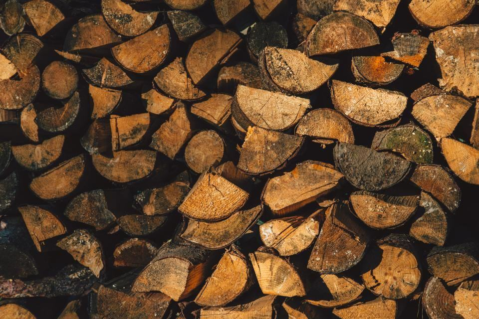

Uppdrag
Ett urval av fällningar, beskärningar och stubbfräsningar.
- 2026

Trädregister Lund
6 200 träd på kommunal mark registrerade med foto och åtgärdsklass.
- 2026

Gatuträd i Trelleborg
Underhållsbeskärning av 1 400 gatuträd per år enligt plan.
- 2025

Rosengårds bostadsgårdar
Plan för 820 träd där 15 procent byts ut i etapper över tio år.
- 2025

Kvarteret Varvsporten
Skydd och uppföljning av tolv platanlönnar under nybyggnation.
- 2025

Brf Pildammsparken
Tioårsplan för 96 träd med budget fördelad per verksamhetsår.
- 2026

Lindallén i Eslöv
Beskärning av 210 lindar och plantering av 18 ersättningsträd.


Beställarna om samarbetet
Lars-Erik T., stadsträdgårdsmästare · Lund”Inventeringen levererades som shapefiler som gick rakt in i vårt system. Det har vi inte varit med om tidigare.”
Sanna M., förvaltare · Malmö”Förnyelseplanen gjorde att vi slapp tömma gården på en gång. De boende fick information på tre språk och klagomålen uteblev.”
Peter Å., projektledare · Västra hamnen”Moa upptäckte att entreprenören schaktat i rotzonen och stoppade arbetet samma eftermiddag. Platanerna står kvar.”